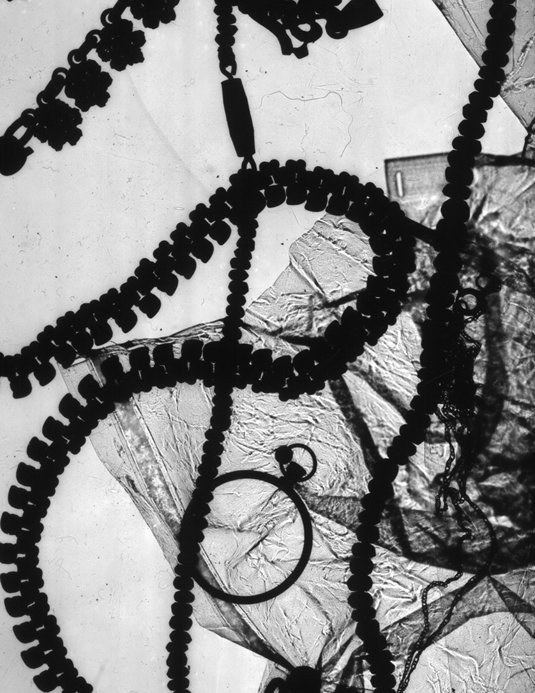
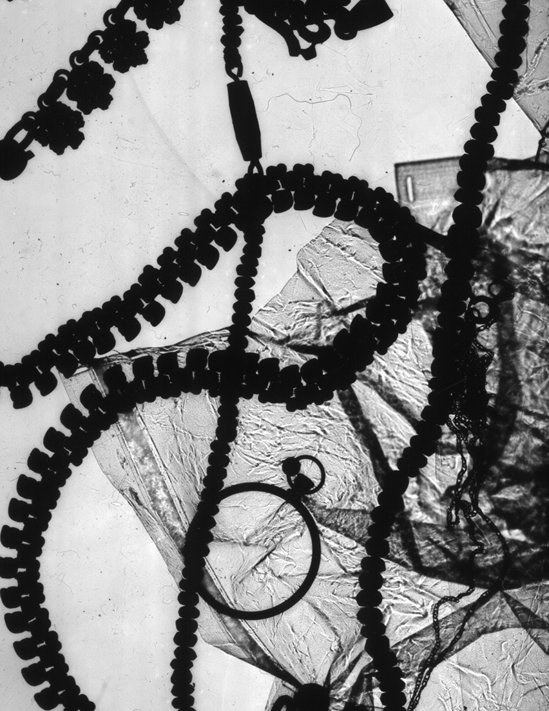

Once I had made my photograms I decided to scan them to be able to keep a digital, high resolution copy. This led to messing around with dragging the photograms in different directions and at different speeds during the scanning process. By doing this I was able to produce all of the image studies shown on the right, creating textured patterns and haunting silhouettes.